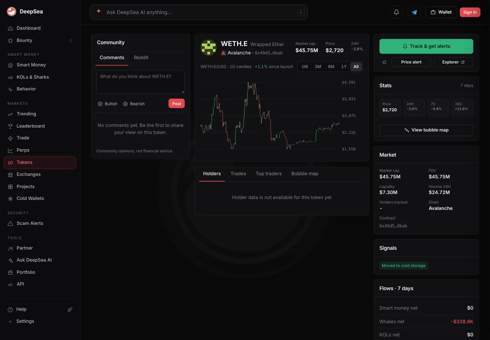
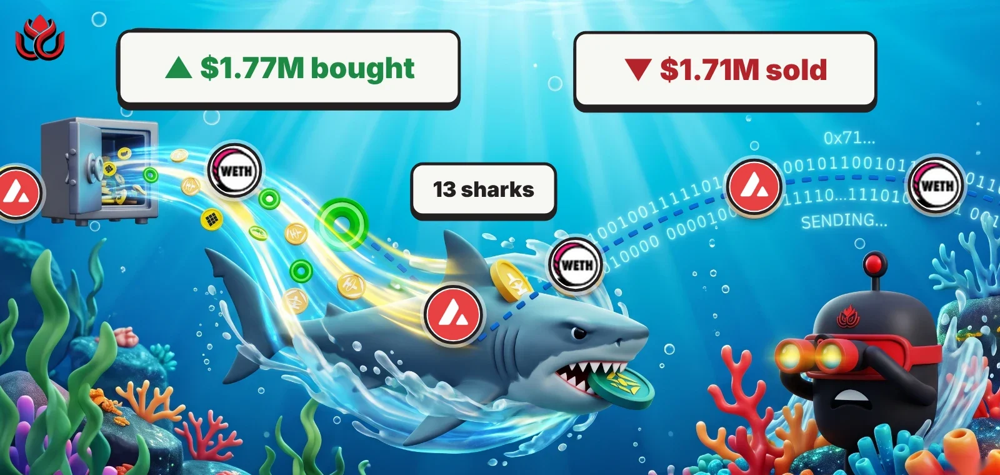

Two Avalanche shark wallets made 580 small trades in bridged ETH and BTC as AVAX rose 8%
DeepSea's Avalanche shark feed looked crowded on Monday night. It was mostly two wallets swapping bridged ether and bitcoin back and forth in small pieces.
Key points
- In the 24 hours to 8:49 p.m. ET on November 9, 2026, DeepSea shows at least 13 shark wallets on Avalanche making 634 trades: $1.77 million bought and $1.71 million sold.
- Two wallets made 580 of those trades. The busiest made 380 trades, buying $625,442 and selling $770,155.
- The main token was WETH.e (bridged ether): 436 trades, $1.20 million bought and $1.22 million sold. AVAX itself rose 8.1% on CoinGecko.
 What DeepSea's data shows
What DeepSea's data shows
DeepSea's live feed adds up trades by wallets it tags as sharks (large, active traders). Its 24-hour list for Avalanche at 8:49 p.m. ET on November 9 shows 634 trades by at least 13 wallets, $1,774,147 bought and $1,713,834 sold.
Big numbers in the feed are trade counts, not wallet counts. WETH.e, ether bridged to Avalanche, had 436 trades by 3 wallets: $1,201,730 bought and $1,222,858 sold, a net of about minus $21,000. In the last hour alone it had 125 trades by 2 wallets ($218,580 bought, $169,002 sold). BTC.b, bridged bitcoin, had 159 trades by 4 wallets: $352,510 bought and $410,479 sold.
Two wallets did most of it. The one DeepSea shortens to 0x51…2a7f made 380 trades ($625,442 bought, $770,155 sold). 0x27…f8d2 made 200 ($370,239 bought, $355,611 sold). DeepSea gives no name for either.

Data: DeepSea (desea.io), checked November 9, 2026, 8:49 p.m. ET.
Small pieces, fast
DeepSea's event feed shows the pattern. Between 8:48 and 8:50 p.m. ET the two wallets bought WETH.e seven times, in pieces from $1,180 to $6,895, and 0x27…f8d2 also bought $1,857 of BTC.b. Hundreds of small trades that buy and sell close to the same totals look like automated trading, though DeepSea does not say what software runs the wallets.
DeepSea's 30-day profit table puts 0x27…f8d2 at minus $43,017 realized over 4,741 closed trades, with 814 winners. 0x51…2a7f has no row in that table.
Avalanche shark trades in 24 hours, by wallet
trades
24 hours to 8:49 p.m. ET, November 9, 2026. Source: DeepSea live feed.
The bigger trades and the rest
A third wallet, 0xc7…8d38, moved more money per trade: 25 trades, $631,066 bought and $535,966 sold. DeepSea shows it at minus $352,820 realized over 30 days (50 closed trades, 11 winners).
Outside the two bridged coins, shark buying on Avalanche was small: $53,504 of p33, $43,125 of PHAR, $27,757 of the euro stablecoin EURC and $19,218 of sAVAX (staked AVAX). DeepSea's Avalanche list has no line for AVAX itself.

Checked against CoinGecko
We checked prices and volumes on CoinGecko. At 8:54 p.m. ET, AVAX traded at $8.69, up 8.1% in 24 hours, on $539 million of volume. CoinGecko lists Avalanche Bridged WETH at $2,125 with $24.7 million of 24-hour volume, so the sharks' $2.42 million of WETH.e buys and sells equal about a tenth of it.
LC Insight analysis
This section is our reading of the facts above, not a statement of fact.
- We think the headline count of Avalanche shark activity overstates the crowd. Two wallets trading in small pieces explain nine in ten trades. Between them they bought about $996,000 and sold about $1.13 million.
- The AVAX rally does not show up in this data as shark buying of AVAX. Big tracked wallets were trading ether and bitcoin on Avalanche, not the chain's own coin.
What's next
- Whether 0x51…2a7f and 0x27…f8d2 keep the same pace, and whether their 30-day results improve
- Whether shark buying of AVAX or sAVAX picks up if the rally holds
Disclaimer. This article is based on public information and the sources listed below as of the update time shown. It is for information only and is not investment, legal or tax advice. Figures may change as companies and authorities publish new data.
Sources
- DeepSea live feed, 1-hour and 24-hour shark aggregates (fetched November 9, 2026, 8:49 p.m. ET)
- DeepSea live events, last 6 hours (fetched November 9, 2026, 8:50 p.m. ET)
- DeepSea, 7-day and 30-day realized PnL per tracked wallet (fetched November 9, 2026, 8:49 p.m. ET)
- CoinGecko, AVAX price and volume (November 9, 2026, 8:54 p.m. ET)
- CoinGecko, Avalanche Bridged WETH (November 9, 2026, 8:59 p.m. ET)